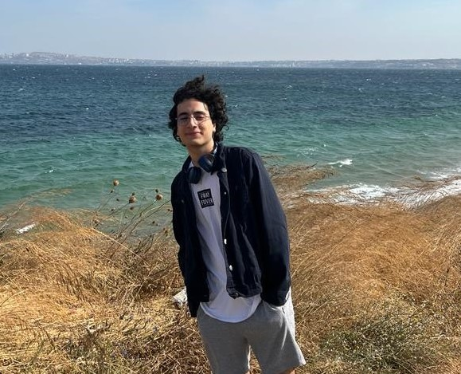

Ben Berkuk Çelik. 2004 yılında Kayseride doğdum. İlkokul,ortaokul ve lise eğitimlerimi Kayseride tamamladım.
Bandırma Onyedi Eylül Üniversitesinde Yazılım Mühendisliği 1.Sınıf öğrencisiyim. Bilgisayara olan ilgim oyunlar ile
başladı. Çocukken oynadığım oyunların arka planda nasıl çalıştığını hangi tuşa basınca ne olacağını hep merak ederdim.
Bunun için en iyi bölüm olarak yazılım mühendisliğini tercih ettim. Şuanda kendimi unity ve C# programlama dillerinde
geliştiriyorum. Yeterince geliştikten sonra basit mobil oyunlar yapıp, kendimi geliştirip daha büyük çaplı oyunlar
yapabileceğim bir ekip,şirkette olmak istiyorum.
Boş zamanlarımın büyük çoğunluğunu film izleyerek geçiriyorum. Sinema sektörü en büyük ilgi alanlarımdan birisi.
Yönetmenlik,kurgu,sinematografi konularını araştırmak ve insanlarla bunlarlı tartışmayı seviyorum. Son zamanlarda
çok oynamasam da oyun oynamak da en büyük hobilerim arasında. Yazılıma merakımı daha çok RPG oyun türlerinde
kazanmış olsamda daha çok MOBA oyunları oynadım. Artık oynamaktan ziyade yapma kısmına odaklanmış durumdayım.
Öz Geçmiş sayfasına tıklayarak hazırladığım CV'ye ulaşabilirsiniz.
İletişim kısmında ise iletişim bilgilerime ulaşabilirsiniz.